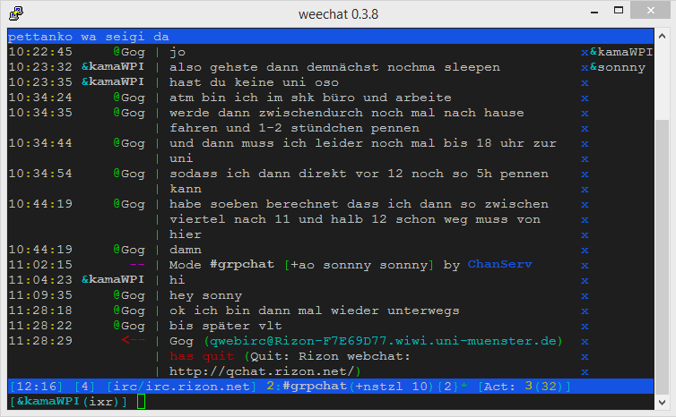

Choose mascot
 |
 |
||
 |
 |
||
 |
 |
 |
|
 |
 |
Choose mascot
|
|
||
|
|
||
|
|
|
|
|
|
ein absolut ausgezeichneter anime. gewinner des 17. animation kobe award 2011. die hauptcharaktere sind akaza akari, toshinou kyouko, funami yui und yoshikawa chinatsu. akari ist ein junges mädchen und der inbegriff von "good girl", leider ist sie so unscheinbar dass sie nicht viel aufmerksamkeit bekommt was ihr manchmal etwas zu schaffen macht. ihre große schwester ist aber immer für sie da und auch die anderen mitglieder im goraku-bu haben akari sehr lieb auch wenn sie sie öfter mal teasen. toshinou hält den club ständig auf trab mit ihren verrückten ideen, yui ist die erwachsene in der runde aber dennoch immer für einen spaß zu haben und chinatsu ist worst girl. neben den 4 gibts auch noch viele andere, unter anderem sakurako (best girl), die best ist. oder ayano die toshinou-san sehr gern hat aber ihr fällt es ziemlich schwer es zu zeigen. gruß auch an die himawari
k-on ist ein anime über musik. 4 junge frauen gründen eine band und verfolgen ihr ziel eines tages die ganze welt mit ihren klängen zu erreichen. dieser anime hat blood, sweat und tears. ein dramatisches meisterwerk von der ersten bis zur letzten folge. übrigens auch ein mal 2010 den 15. kobe award gewonnen mit der 2. staffel. ich kann diese zeichentrickserie wirklich nur empfehlen. ist für animation das was für filme herr der ringe ist
ein recht junger anime aber dennoch ein anime der sich neben titeln wie yuru yuri und k-on presenten darf. das hauptthema dieses anime ist kaffee und die bedeutung von kaffee in unserer modernen gesellschaft. der cast besteht aus cocoa, chino, syaro, rize und chiya, eine gruppe von freunden die gemeinsam kaffee studieren und nebenbei versuchen über die runden zu kommen. definitiv ein werk bei dem tränen fließen werden, sowohl tränen der freude als auch trauer
Astarotte no Omocha ist ein actionreicher Anime über den kampf zwischen den dämonen der nachwelt und der menschheit, bedient sich vieler biblischer motive und hat nicht zu wenig gore so viel sei gesagt
fate kaleid liner prisma illya ist die einzig gute serie die jemals aus dem typemoon universum kam. illya, ein junges mädchen, gerät in wilde abenteuer und lernt neue freunde kennen. klingt wie ein spaß für die ganze familie? oh nein halt mein junge, dieser anime ist nichts für weicheier. auf ihren abenteuern erlebt illya viele hardships und despair, doch sie gibt niemals auf und kämpft bis zum bitteren ende.. wo genau das dann hinführt verrat ich natürlich noch nicht.. absolut geile serie epischen ausmaßes, dicke recommendation aber NICHTS FÜR SCHWACHE NERVEN!
in futsuu no joshikousei ga locodol yatte mita versuchen nanako und yukari ihre geliebte heimatstadt zu retten. nagarekawa ist eine ziemlich einfache kleine stadt und es gibt nicht viel zu sehn, das denken zumindest die meisten leute und deswegen sieht es furchtbar um die zukunft nagarekawas aus!! doch das lassen yukari und nanako nicht zu! gemeinsam gründen sie eine idolgruppe und steigen in das pop-geschäft ein! können die nagarekawa girls im idol business aufsteigen und die reputation von nagarekawa verbessern!??
kiniro mosaic ist ein sehr multikultureller anime, die austauschstudentin alice kommt nach japan um ihre freundin alice aus kindheitstagen wieder zu sehen! doch worauf hat alice sich dabei nur eingelassen? in eine völlig andere kultur geworfen versucht sie ihren platz in der japanischen gesellschaft zu finden!!
dieser anime findet im land gamindistri statt. es gibt 4 göttinen die die spielekonsolen sega neptune, playstation 3, xbox 360 und wii repräsentieren und unter denen das land aufgeteilt ist. doch es läuft nicht immer alles so friedlich bis die göttinnen eines tages endlich einen friedensvertrag unterschreiben. jedoch unterbindet das nicht die gefahren von außerhalb und gemeinsam müssen die göttinnen sich zur wehr setzen!
tantei opera milky holmes ist eine mystery anime serie. sheryl, nero, elly und cordelia sind ein team das gemeinsam das verbrechen bekämpft und dafür hoch angesehen werden. ihr erzrivale, das gentlemen thief empire, ruht jedoch nie! seid auf der hut, milky holmes!
guten tag, ich wünsche frohe weihnachten. heute ist der 2. christmas day und alle sind glücklich, besonders nils weil er auch heute wieder seinen anzug tragen kann und sich dadurch wie etwas besonderes fühlt, ein feel das er in seinem alltag leider viel zu selten feelt. ganbare nils!
doch nun zu shirobako. shirobako ist rly cool, ist ein anime übers anime maken. setting ist ein ficitonal animestudio wo ne qt3.14 neu anfängt und dann machen sie nen anime. gibt aber auchn noch paar andere peoplez von denen man was sieht zb ne seiyuu, animator usw. kann man bissl insight gainen wie anime so produced werden und was alles abgeht. hat tonnenweise referenzen zum real animebusiness aber denke ist auch gudd wenn man die nicht alle cheqqt. ist einfach ne phun serie, läuft atm noch und enjoye sie einen biggen deal wenn du understandest was ich sayen wante. gruß an meine kids in bremen, daddy denkt an euch its christmas
dies ist eine very touching story about kirino und kyousuke kirino ist die qt blonde da die so super happy lächelt klick ma oben rechts drauf du weißt wen ich mein ja genau die, ok hier haste auch nochn link kawaii deshou? solltest du jedenfalls wirklich mal schauen oreimo ist ein anime mit sehr viel sehr cuten 2d girls und das sollte man mal gesehn haben weil das spaß macht ayase ist auch sehr gut ich werd sie bei gelegenheit auch noch einfügen müssen. erinner mich dann dran wenn du das hier liest. [added 31.12.2014] arigatou gozaimasu.
ernst gemeinte rec btw 0O^^ versuchs einfach mal..
ok ist currently airing (29.19.2014) und whatever kb zu beschreiben bin jetzt 4 folgen in und denke es wird dir auf jeden fall gefallen. action thriller shit ok
nachtrag 26.11.2014 hi freund jo ist echt nice watch das mal wirste gut finden trust me
ein anime über fischleute und normale leute und die fischleute leben unterwasser und alles ist very beautiful und stuff happened und alles wird dramatisch vary nice wud regomend
ich starte to regretten den shit als html zu schreiben aber hey. elfenlied ist harter edgeshit mit gore und moecharacterdesigns aber hey 12jährige finden es echt dope also könnte es ganz gut zu deinem taste passen was meinste du wicht
weiß gar nicht mehr wie die scheiße anfängt aber da ist son spast und boah ist mir echt zu blöd zu beschreiben fick dich einfach recommende das doch nicht aber löschen werd ichs auch nicht whatever nerd
so dark humour mit nem sehr farbenfrohen artstyle, die einzelnen episoden sind ziemlich convoluted aber ist good phun
von dem tatamigalaxy/pingpong/uvm director da. gibt so monster und gibt loide die im underground gegen diese monster fighten. cool shit. aber ist vll wieder son artstyle wo du wien spast kommst like ööh voll ugly kackspecht
ach weiß nicht ob ich das recommenden soll whatever ist von dem hyouka studio da hatn ähnlichen artstyle aber auch urban fantasy mit blood und action aber gleichzeitig oft auch lighthearted und on the funny side, story ist manchmal bissl behinnad und cheap aber ich enjoyedte es
wieder so edgeshit man du gehst mir so auf die eier mit dieser verfickten scheiße das ist das letzte mal ab jetzt recommende ich nur noch cute sachen. gibt son gott und der veranstaltet n battle mit paar teams und die müssen sich gegenseitig FIQQEN
blabla kennste ja oder. der steins gate nachfolger da
jesus und buddha wohnen in nen kleinen appartment in japan und exploren die moderne society und machen gags
aah das ist nice. son mann geht zu einer funeral seines dads oso oder irgendein verwandter und dann ist da son kid das keiner will und er adopted es einfach und dann wohnt sie bei ihm und eine heartwarming story begins, ist kein pedoshit oso ok nur fatherly feels
kennste ja schon oda ;) ist cool ;-)
ok stell dir vor oreki aber mach ihn dann 50 mal edgier und die ganze welt hassend. dann haste den mc von yahari. der chillt so in der school. und hatet bissl andere leude. oh aber ist nothing like hyouka. geht pimarily um den guy und sein loserlaiph
oh das istn nicer film über so ne menschenhoe die nen werwolf bangt und dann hat sie werwolfkids und ich verrat mal nicht zu viel, ist bissl traurikk
dies ist eine animéserie über n typ der zu so einer landwirtschaftsschule geht wo man halt so halb bauer ist und dann arbeitet er viel. ist slice of life k nette gechillte serie danach fühlt man sich refreshed und motivated weißte wie ich mein
hi stefan ich bins der p~. du kleine bitch lolll. kugg mal fate stay night ist nice. aber bissl less edgy als fate zero.... haha
anime adaptations von so famous japanischer literature also richtige bücher ne weißte nicht dein komischer nerdshit für kids LMAO 12 folgen finde die stories sind bissl hit&miss aber worth a watch
son ghiblifilm über zeit nachm 2. weltkrieg wo son junge und seine kleine sis versuchen über die runden zu kommen. feels
DER klassiker den man gesehn haben muss sonst hat man nicht das recht eine meinung zu anime zu haben. bioroboter die gegen engel battlen und humanity verteidigen und ein kleiner lauch der der sie steuert und auf sein laiph klar kommen muss. arigatou, gozaimasu desu.
evangelion ist fette biologischerobotermonster mit nem beta protag und dann wird alles weird und das ende ist wtf aber coole serie schaus dir mal an meiner oma gefällts
nachtrag 09.12.2014 00:24 oh hey schau mal ich hab eva ja schon mal empfohlen...hast grad son gay webm gepostet wo ne robbe von nem wal ins wasser gezogen wird oso und fragtest "wie macht euch das fühlend". ich werde dir nicht darauf antworten und einfach /me spitten du hoe, die robbe ist mir scheiß egal fickslave. stell keine dummen fragen -.-
hello. we are supporting the bpg image format. here is a comparison of files of the image. please support the superior bpg image format. arigatou, arigatou gozaimasu. left bpg (20qp, 420 cfmt, ycbcr, 10bit) 40.1KB, right 60% quality JPG 41.8KB
content moved
der nari kommt immer in den grpchat und talked dann nichts. das ist ja ein ganz schoen mysterioeser kerl der ist bestimmt beliebt. haenge noch ein bild an MFG 12. november 2014 viertel nach tswoelf. mal schnell ins btsync geworfen und zack da ist es ich brauch keine cloud du wichsa tja wie fügt man nochma bilder ein in html

hm mal testen.
aha das hat funktioniert. war ja ez
ja da gibts son typ und der ist super smart und der kriegt ne superpower und dann gehts los weißte und er ist trixxt alle aus und dann wird die story immer idiotischer aber ist funny k alles klar kann man sich mal ansehn!!!!
hey das ist evtl was für dich gibt son village und da hm ich weiß nicht was man zu anfang weiß evtl spoil ich jetzt shit also lass ichs mal ist jedenfalls so bissl horror mit übertriebener action und dann gehts immer mehr ab in dem dorf weißte wie ich mein. glaube die meistens meiner beschreibungen sind krank kacke und ungenau aber ich will halt nichts spoilen und ich bin too lazy es ordentlich zu machen. plus ich schaue eigentlich grad animé auf meinem hauptscreen und schreib hier nur so nebenbei wahrscheinlich ergeben die meisten sätze gar keinen sinn lol like i give a fuck... gog ist ganz cute wenn er nicht grad über wow redet also nie lol...
ne pretty lange serie (39 folgen) über son vasall von oda nobunaga. das klingt als wäre n bisschen action drin aber es passiert rly nicht viel, der typ redet eigentlich die ganze zeit nur über teezeremonien und ästhetische wertgegenstände. aber ist rly rly gut
von den fate spastis. im selben universum wie fate. auch so urban fantasy. ist ne pretty lange reihe von filmen. cool und dark wie meine soul. find ich eigentlich cooler wie fate aber muss mir die filme mal wieder ansehn ey hab nichts mehr davon im kobb